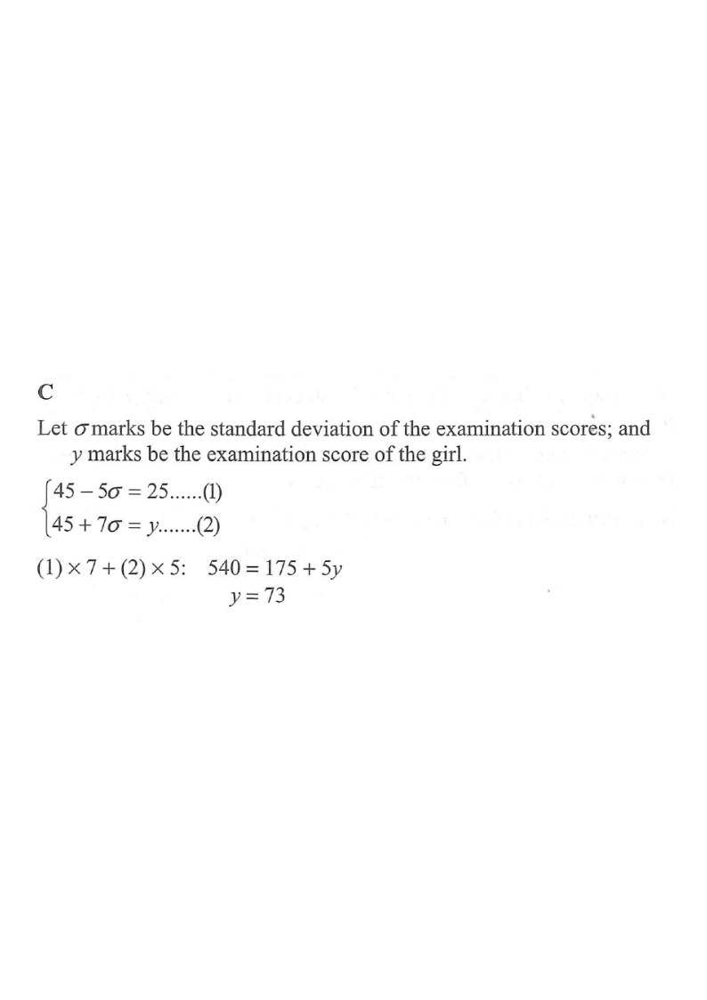

Scroll the solution on the right — the curve highlights the relevant values.
In an examination, the mean of the examination scores is $45$ marks. A boy gets $25$ marks in the examination and his standard score is $-5$. If the standard score of a girl in the examination is $7$, then her examination score is

Let $\sigma$ marks be the standard deviation of the examination scores, and let $y$ marks be the examination score of the girl.
The boy's score is $25$, mean is $45$, and his standard score is $-5$:
$$\frac{25-45}{\sigma}=-5$$
$$\frac{-20}{\sigma}=-5 \quad\Longrightarrow\quad \sigma = \frac{-20}{-5}=4$$
The girl's standard score is $7$, so:
$$\frac{y-45}{4}=7 \quad\Longrightarrow\quad y-45=28$$
$$y = 45 + 7(4) = 45 + 28 = 73$$